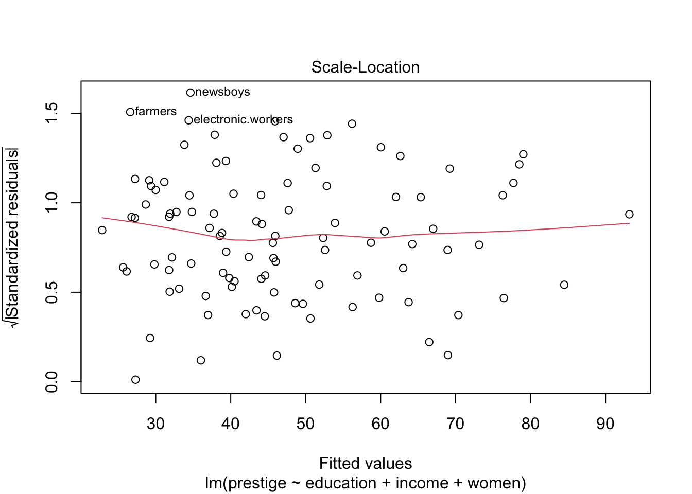

Lab 09: Multiple Regression
Mar 25, 2022
โหลดแพ็คเกจที่จะต้องใช้ในแบบฝึกหัดนี้
library(psych)
library(car)
library(carData)
library(QuantPsyc)1. Multiple Regression
Linear model
การวิเคราะห์ถดถอยพหุคูณนี้จะใช้ชุดข้อมูล Prestige จากแพ็คเกจ carData ข้อมูลชุดนี้มีอาชีพเป็น observation (แต่ละแถวแทนอาชีพหนึ่งอาชีพ เคสเป็นระดับอาชีพ ไม่ใช่ระดับบุคคล) มีตัวแปรต่าง ๆ ดังนี้
education = ระยะเวลาการศึกษาเฉลี่ยของผู้ประกอบอาชีพนั้น
income = รายได้เฉลี่ยของผู้ประกอบอาชีพ หน่วยเป็นดอลลาห์
women = ร้อยละของผู้หญิงในอาชีพ
prestige = คะแนนมาตรความมีเกียรติ (Pineo-Porter prestige score) ของอาชีพ
census = รหัสอาชีพในสำมะโนประชากรของแคนาดา
type = ประเภทของอาชีพ bc = Blue Collar; prof = Professional, Managerial, and Technical; wc = White Collar
เราจะใช้คำสั่ง lm() เพื่อสร้างโมเดลเชิงเส้นตรงทำนายความีเกียรติของอาชีพ prestige ด้วย education, income, และ women
# Import data
dat <- carData::Prestige
str(dat)## 'data.frame': 102 obs. of 6 variables:
## $ education: num 13.1 12.3 12.8 11.4 14.6 ...
## $ income : int 12351 25879 9271 8865 8403 11030 8258 14163 11377 11023 ...
## $ women : num 11.16 4.02 15.7 9.11 11.68 ...
## $ prestige : num 68.8 69.1 63.4 56.8 73.5 77.6 72.6 78.1 73.1 68.8 ...
## $ census : int 1113 1130 1171 1175 2111 2113 2133 2141 2143 2153 ...
## $ type : Factor w/ 3 levels "bc","prof","wc": 2 2 2 2 2 2 2 2 2 2 ...prestige.lm <- lm(prestige ~ education + income + women, data = dat)
summary(prestige.lm)##
## Call:
## lm(formula = prestige ~ education + income + women, data = dat)
##
## Residuals:
## Min 1Q Median 3Q Max
## -19.8246 -5.3332 -0.1364 5.1587 17.5045
##
## Coefficients:
## Estimate Std. Error t value Pr(>|t|)
## (Intercept) -6.7943342 3.2390886 -2.098 0.0385 *
## education 4.1866373 0.3887013 10.771 < 2e-16 ***
## income 0.0013136 0.0002778 4.729 7.58e-06 ***
## women -0.0089052 0.0304071 -0.293 0.7702
## ---
## Signif. codes: 0 '***' 0.001 '**' 0.01 '*' 0.05 '.' 0.1 ' ' 1
##
## Residual standard error: 7.846 on 98 degrees of freedom
## Multiple R-squared: 0.7982, Adjusted R-squared: 0.792
## F-statistic: 129.2 on 3 and 98 DF, p-value: < 2.2e-16ค่า F ที่มีนัยสำคัญทางสถิติแสดงให้เห็นว่า ตัวแปร X ทั้ง 3 ตัว ร่วมกันทำนายตัวแปร Y ได้อย่างมีนัยสำคัญทางสถิติ (\(R^2 > 0\))
การวิเคราะห์นี้มี intercept 1 ตัว (\(b_0\)) และสัมประสิทธิ์ถดถอย 3 ตัว ได้แก่ \(b_{education}\), \(b_{income}\), \(b_{women}\) ดังนั้น \(df = N - k -1 = 102 - 3 -1 = 98\)
ในการวิเคราะห์นี้พบตัวแปรทำนายที่สัมพันธ์กับ Y อย่างมีนัยสำคัญทางสถิติ คือ education และ income ในขณะที่ women ไม่พบความสัมพันธ์อย่างมีนัยสำคัญ
ค่าสัมประสิทธิ์แต่ละตัวถูกทดสอบว่าแตกต่างจาก 0 หรือไม่ \(H_0: b ≠ 0\) โดยนำค่า b (Estimate) ไปหารด้วยความคลาดเคลื่อน Std. Error จะได้ค่า t value และค่า p-value Pr(>|t|)
ค่าสัมประสิทธิ์เหล่านี้เป็นอยู่ในหน่วยของคะแนนดิบ หากต้องการเปรียบเทียบนำ้หนักของแต่ละตัวแปรในโมเดลนี้ ต้องใช้ค่าสัมประสิทธิ์มาตรฐาน (standardized coefficients)
lm.beta(prestige.lm)## education income women
## 0.66395513 0.32417566 -0.01642104Update Mar 30, 2022:
Package ‘QuantPsyc’ was removed from the CRAN repository.
Formerly available versions can be obtained from the archive.
Archived on 2022-03-07 as check problems were not corrected despite reminders.
A summary of the most recent check results can be obtained from the check results archive.
Please use the canonical form <https://CRAN.R-project.org/package=QuantPsyc> to link to this page.
Extra
ค่า standardized coefficients จริง ๆ แล้วก็คือ การนำค่าตัวแปรทุกตัวไปแปลงเป็น standard score (z-scores) ก่อนแล้วนำมาใส่ในโมเดล ดังนั้นเราสามารถคำนวณค่า standardized coefficient เองได้ด้วย
prestige.zlm <- lm(scale(prestige) ~ scale(education) + scale(income) + scale(women), data = dat)
summary(prestige.zlm)##
## Call:
## lm(formula = scale(prestige) ~ scale(education) + scale(income) +
## scale(women), data = dat)
##
## Residuals:
## Min 1Q Median 3Q Max
## -1.15229 -0.30999 -0.00793 0.29984 1.01744
##
## Coefficients:
## Estimate Std. Error t value Pr(>|t|)
## (Intercept) -1.396e-17 4.516e-02 0.000 1.00
## scale(education) 6.640e-01 6.164e-02 10.771 < 2e-16 ***
## scale(income) 3.242e-01 6.855e-02 4.729 7.58e-06 ***
## scale(women) -1.642e-02 5.607e-02 -0.293 0.77
## ---
## Signif. codes: 0 '***' 0.001 '**' 0.01 '*' 0.05 '.' 0.1 ' ' 1
##
## Residual standard error: 0.4561 on 98 degrees of freedom
## Multiple R-squared: 0.7982, Adjusted R-squared: 0.792
## F-statistic: 129.2 on 3 and 98 DF, p-value: < 2.2e-16Residual plots
หากเรา plot(model) โปรแกรม R จะแสดงกราฟที่ใช้เพื่อวินิจฉัยโมเดลมาให้
กราฟ Residuals vs Fitted ใช้ตรวจสอบ linearity assumption กราฟจะแสดงค่า \(\hat{Y}\) (Fitted) และ \(e\) (Residuals) หากความสัมพันธ์ระหว่างผลรวมเชิงเส้นตรงของตัวแปร X สัมพันธ์ทางบวกกับ Y เส้นสีแดงจะเป็นเส้นตรงตามเส้นประ
กราฟ Normal Q-Q ใช้ดู normality ของ residuals หากความคลาดเคลื่อนมีการกระจายตัวเป็นปกติ จุดคะแนนต่าง ๆ จะเรียงตัวอยู่บนเส้นแทยง
กราฟ Scale-Location หรือ Spread-Location ใช้ตรวจสอบ homoscedasticity (homogeneity of variance สำหรับ regression) ความแปรปรวนของ residual ควรเท่ากันในทุกช่วงคะแนน \(\hat{Y}\) ดังนั้นการกระจายของจุดต่าง ๆ จะกว้างพอ ๆ กันตลอดแกน X ทำให้ได้เส้นสีแดงที่เป็นเส้นตรงแนวนอน
กราฟ Residuals vs Leverage แสดงถึงข้อมูลสุดโต่งหรือข้อมูลที่มีอิทธิพลต่อโมเดลอย่างมาก ข้อมูลที่มีอิทธิพลสูงนี้สามารถทำให้ความชันของสมการเปลี่ยนแปลงไปได้ หากมีหรือไม่มีข้อมูลจุดนั้นอยู่ กรณีที่สุดโต่งจะมีค่า Leverage สูงแยกออกมาจากข้อมูลส่วนใหญ่
plot(prestige.lm)

คำสั่ง plot() นี้ทำให้เราเห็น assumption ต่าง ๆ ของโมเดลในภาพรวม แต่ยังไม่ช่วยบอกว่าตัวแปร X ตัวใดที่อาจจะเป็นต้นเหตุของปัญหา
เราสามารถใช้คำสั่ง residualPlots() ในแพ็คเกจ car เพื่อตรวจสอบ linearity assumption เป็นรายตัวแปร X ได้ นอกจากนี้คำสั่งจะให้ค่าทดสอบของ Tukey’s nonadditivity test มาด้วย หากมีนัยสำคัญทางสถิติแสดงว่าความสัมพันธ์ของตัวแปร X นั้นกับ Y ไม่เป็นเส้นตรง
ลองพิจารณาค่าสถิติและกราฟดูว่าตัวแปรใดน่าจะต้นเหตุของ nonlinearity ในโมเดลนี้
residualPlots(prestige.lm)
## Test stat Pr(>|Test stat|)
## education 1.3268 0.1877
## income -4.2815 4.366e-05 ***
## women 1.4427 0.1523
## Tukey test -1.4169 0.1565
## ---
## Signif. codes: 0 '***' 0.001 '**' 0.01 '*' 0.05 '.' 0.1 ' ' 1อย่างไรก็ดี การใช้ตาตรวจดูค่าความผิดปกติต่าง ๆ อาจมีอคติหรือข้อผิดพลาด ทำให้ตัดสินใจผิดพลาดได้ว่าข้อมูลที่เป็นปัญหา คือ จุดใด ดังนั้นวิธีการตรวจทางสายตาจึงควรใช้ควบคู่กับการทดสอบด้วย
2. Detecting Extreme Cases
2.1 Leverage
เลฟเวอเรจ (leverage) คือ กรณีที่ค่าของตัวแปรทำนาย \(X_i\) นั้นมีระยะห่างจากค่าเฉลี่ย \(\bar{X}\) อย่างมาก (ไม่เกี่ยวกับค่า Y) ในแบบฝึกหัดที่ผ่าน ๆ มา เราได้ใช้วิธีแปลงคะแนนค่า X เป็นคะแนนมาตรฐาน (z score) เพื่อดูว่าค่านั้นสุดโต่งหรือไม่ นี่คือแนวคิดของการหา univariate outlier คือพิจารณาค่าสุดโต่งของตัวแปรเดียว (ไม่พิจารณาร่วมกับตัวแปรอื่น) หากเรานำค่า z ที่ได้ไปยกกำลังสอง เราจะได้สูตรดังนี้
\[ Z^2_{X_i} = \bigg{(}\frac{X_i - \bar{X}}{s_{X}^2}\bigg{)}^2 \]
เนื่องจากค่า \(Z^2\) เป็นค่าทางบวกเสมอที่แสดงถึงความห่างของค่าคะแนน \(X_i\) จากค่าเฉลี่ย \(\bar{X}\) โดยปกติแล้วเราจะใช้เกณฑ์ที่ ±3 SD เป็นจุดตัดของค่าสุดโต่ง
Mahalanobis distance
แต่ในกรณีของการถดถอยพหุคูณ (multiple regression; MR) ค่าตัวแปร X ที่สุดโต่งอาจต้องพิจารณาร่วมกับตัวแปร X อื่น ๆ ด้วย เช่น คนที่สูง 180 อาจจะไม่นับว่าเป็นค่าสุดโต่งในชุดข้อมูล แต่ผู้หญิงที่สูง 180 เป็นค่าที่มีเลฟเวอเรจสูง (พิจารณาตัวแปรเพศและความสูงร่วมกันแล้วมีโอกาสเกิดขึ้นน้อย) เนื่องจากต้องพิจารณาหลายตัวแปรร่วมกันจึงเรียกว่าเป็น multivariate outlier โดยค่าสถิติที่ใช้พิจารณาก็พัฒนาต่อเนื่องมาจากสูตรด้านบนโดยใช้พีชคณิตเมทริกซ์ ได้เป็นค่าที่เรียกว่า Mahalanobis distance
เราจะใช้คำสั่ง outlier(x, plot = TRUE, bad = 5, na.rm = TRUE) ในแพ็คเกจ psych
x คือ ชุดตัวแปร X
plot คือต้องการให้สร้างกราฟ QQ หรือไม่ (ค่าตั้งต้น = TRUE)
bad คือ ให้แสดงเคสที่มีปัญหาบนกราฟ (ค่าตั้งต้น = 5 ตัวที่มีปัญหามากที่สุด)
na.rm คือ ให้ลบข้อมูลที่มี missing ทิ้ง (ค่าตั้งต้น = TRUE)
predictors <- dat[c("education", "income", "women")]
dat$maha_dis <- psych::outlier(predictors)head(dat)## education income women prestige census type maha_dis
## gov.administrators 13.11 12351 11.16 68.8 1113 prof 1.7323152
## general.managers 12.26 25879 4.02 69.1 1130 prof 33.5731939
## accountants 12.77 9271 15.70 63.4 1171 prof 0.7825381
## purchasing.officers 11.42 8865 9.11 56.8 1175 prof 0.4787457
## chemists 14.62 8403 11.68 73.5 2111 prof 3.6997050
## physicists 15.64 11030 5.13 77.6 2113 prof 4.4454380#calculate p value for Mahalanobis distance with Chi-square test with df = k- 1, where k = number of variables.
dat$maha_p <- pchisq(dat$maha_dis, df = 2, lower.tail = FALSE) # We only look for large MD. Therefore, only upper tail of distribution.
head(dat)## education income women prestige census type maha_dis maha_p
## gov.administrators 13.11 12351 11.16 68.8 1113 prof 1.7323152 4.205644e-01
## general.managers 12.26 25879 4.02 69.1 1130 prof 33.5731939 5.124761e-08
## accountants 12.77 9271 15.70 63.4 1171 prof 0.7825381 6.761982e-01
## purchasing.officers 11.42 8865 9.11 56.8 1175 prof 0.4787457 7.871214e-01
## chemists 14.62 8403 11.68 73.5 2111 prof 3.6997050 1.572604e-01
## physicists 15.64 11030 5.13 77.6 2113 prof 4.4454380 1.083142e-01dat[dat$maha_p < .001, ] # cases with p < .001 are considered outliers.## education income women prestige census type maha_dis maha_p
## general.managers 12.26 25879 4.02 69.1 1130 prof 33.57319 5.124761e-08
## physicians 15.96 25308 10.56 87.2 3111 prof 23.60481 7.486533e-06hat values (h-values)
อย่างไรก็ดีค่าสถิติอีกตัวหนึ่งที่ทำหน้าที่เหมือนกับ Mahalanobis distance จะเป็นที่นิยมมากกว่า นั่นคือค่า h values หรือ hat values
ค่า h values จะอยู่ระหว่าง 0 ถึง 1 ทำให้อ่านค่าและกำหนดเกณฑ์ได้ง่ายกว่ามาก โดยมักจะกำหนดให้ค่า hat ต้องไม่เกิน \(2p/n\) โดย p คือ จำนวน parameters ของโมเดล (จำนวน coefficients) และ n คือ จำนวนกลุ่มตัวอย่าง
dat$hat <- hatvalues(prestige.lm)
head(dat)## education income women prestige census type maha_dis maha_p hat
## gov.administrators 13.11 12351 11.16 68.8 1113 prof 1.7323152 4.205644e-01 0.02695556
## general.managers 12.26 25879 4.02 69.1 1130 prof 33.5731939 5.124761e-08 0.34221178
## accountants 12.77 9271 15.70 63.4 1171 prof 0.7825381 6.761982e-01 0.01755182
## purchasing.officers 11.42 8865 9.11 56.8 1175 prof 0.4787457 7.871214e-01 0.01454398
## chemists 14.62 8403 11.68 73.5 2111 prof 3.6997050 1.572604e-01 0.04643466
## physicists 15.64 11030 5.13 77.6 2113 prof 4.4454380 1.083142e-01 0.05381816hat_cutoff <- 2*4/nrow(dat)
high_leverage_cases <- subset(dat, subset = hat > hat_cutoff)
high_leverage_cases## education income women prestige census type maha_dis maha_p hat
## general.managers 12.26 25879 4.02 69.1 1130 prof 33.573194 5.124761e-08 0.34221178
## lawyers 15.77 19263 5.13 82.3 2343 prof 8.992782 1.114916e-02 0.09884136
## ministers 14.50 4686 4.14 72.8 2511 prof 9.325301 9.441403e-03 0.10213364
## physicians 15.96 25308 10.56 87.2 3111 prof 23.604809 7.486533e-06 0.24351491
## sewing.mach.operators 6.38 2847 90.67 28.2 8563 bc 8.889789 1.173835e-02 0.09782163แม้เราจะพบว่ามีกรณีที่ข้อมูลมี leverage สูง แต่ก็ไม่ได้หมายความว่า ค่าเหล่านั้นจะส่งผลต่อโมเดลเสมอไป การตรวจ leverage นี้อาจใช้เพื่อตรวจสอบความถูกต้องของข้อมูลในเบื้องต้น เพื่อดูว่ามีกรณีที่ผิดปกติหรือมีการกรอกข้อมูลผิดหรือไม่ หากข้อมูลไม่ได้มีความผิดปกติอะไร เราอาจเก็บข้อมูลนั้นไว้ก่อนเพื่อไปตรวจสอบ influence ในภายหลัง
2.2 Distance
Distance คือ ระยะห่างของค่า Y แต่ละตัวจากค่า \(\hat{Y}\) (ค่า Y ทำนาย; predicted Y) นั่นก็คือค่าที่ทำให้เกิดความคลาดเคลื่อนในการทำนายสูง (residual)
เคสที่มี distance สูงจะทำให้ความคลาดเคลื่อนของโมเดลสูงไปด้วย และทำให้โมเดลไม่ fit กับข้อมูล (เช่น \(R^2\) น้อยกว่าที่ควรจะเป็น)
Studentized residual
วิธีตรวจสอบว่า residual นั้นมีขนาดใหญ่จนผิดปกติหรือไม่ ทำโดยการแปลง residual เป็น t-score แล้วเปรียบเทียบกับ t-distribution ค่านี้มีชื่อเรียกว่า Studentized residual (มาจากชื่อ Student’s t distribution) ซึ่งเหมาะสำหรับกลุ่มตัวอย่างที่ไม่ใหญ่มาก หากกลุ่มตัวอย่างใหญ่มากจะใช้วิธีแปลงเป็น z-score เทียบกับ normal distribution และเรียกว่า standardized residual
เมื่อแปลงเป็นค่าคะแนน t แล้ว หากทดสอบพบว่าระดับนัยสำคัญ ก็แสดงว่าเป็น outlier
แพ็คเกจ car มีคำสั่งที่ชื่อว่า outlierTest()
outlierTest(prestige.lm)## No Studentized residuals with Bonferroni p < 0.05
## Largest |rstudent|:
## rstudent unadjusted p-value Bonferroni p
## newsboys -2.694442 0.0083101 0.84763ในโมเดลนี้ newsboys เป็นอาชีพที่มี Studentized residual สูงที่สุด แต่ไม่ถึงระดับนัยสำคัญโดยดูจาก Bonferroni p จึงยังไม่ถือว่าเป็นข้อมูลสุดโต่งในตัวแปร Y
2.3 Influence
Influence คือ อิทธิพลที่เคสนั้นมีต่อสมการถดถอย นั่นคือ ถ้าเคสนี้หายไปค่า b จะเปลี่ยนไปเท่าใด
ค่าที่มี leverage หรือ distance สูงอาจจะไม่ได้ส่งผลต่อโมเดลการถดถอยพหุคูณเสมอไป ค่าเหล่านี้จะทำให้ผลการวิเคราะห์ผิดเพี้ยนไปได้ก็เมื่อค่าเหล่านั้นมีอิทธิพล (influence) ต่อสัมประสิทธิ์ถดถอย นั่นคือ ข้อมูลกรณีนี้ทำให้เกิดการเปลี่ยนแปลงของเส้น fitted line อย่างมาก
Cook’s distance
ค่า Cook’s distance ใช้บอกระดับอิทธิพลของเคสต่อผลการวิเคราะห์ถดถอย (ชื่ออาจทำให้สับสน เพราะเรียกว่า distance แต่ใช้วัด influence) โดยปกติแล้วค่า Cook’s d ที่มากกว่า 0.5 หรือ 1.0 จะถือว่าเป็นกรณีที่ต้องพิจารณาอย่างระมัดระวัง
dat$cook <- cooks.distance(prestige.lm)
head(dat)## education income women prestige census type maha_dis maha_p hat cook
## gov.administrators 13.11 12351 11.16 68.8 1113 prof 1.7323152 4.205644e-01 0.02695556 0.002428267
## general.managers 12.26 25879 4.02 69.1 1130 prof 33.5731939 5.124761e-08 0.34221178 0.283269734
## accountants 12.77 9271 15.70 63.4 1171 prof 0.7825381 6.761982e-01 0.01755182 0.001626121
## purchasing.officers 11.42 8865 9.11 56.8 1175 prof 0.4787457 7.871214e-01 0.01454398 0.001082658
## chemists 14.62 8403 11.68 73.5 2111 prof 3.6997050 1.572604e-01 0.04643466 0.013779919
## physicists 15.64 11030 5.13 77.6 2113 prof 4.4454380 1.083142e-01 0.05381816 0.004882702subset(dat, subset = cook > .5) # No Cook's D more than 0.5## [1] education income women prestige census type maha_dis maha_p hat cook
## <0 rows> (or 0-length row.names)plot(prestige.lm, 4:5) # plot 4-5 of the model shows Cook's D & leverage

2.4 Visualizing Extreme Cases
คำสั่ง influenceIndexPlot() ใน car จะช่วย plot กราฟสำหรับตรวจสอบ influence, distance และ leverage
influenceIndexPlot(prestige.lm)2.5 Elimination
ในการวิเคราะห์นี้ กรณีอาชีพ general.managers มีทั้ง Cook’s distance (influence) และ hat-values (distance) สูงที่สุดทั้งคู่ แต่ทว่ายังไม่ถึงเกณฑ์ที่ควรจะต้องตัดข้อมูลทิ้ง
อย่างไรก็ดีเราลองลบอาชีพนี้ออกแล้ว วิเคราะห์ใหม่ดูว่าผลเปลี่ยนไปอย่างไร
re_dat <- dat[row.names(dat) != "general.managers", ]
re.lm <- lm(prestige ~ education + income + women, re_dat)
summary(re.lm)##
## Call:
## lm(formula = prestige ~ education + income + women, data = re_dat)
##
## Residuals:
## Min 1Q Median 3Q Max
## -18.2210 -4.9874 -0.0928 4.9497 17.7093
##
## Coefficients:
## Estimate Std. Error t value Pr(>|t|)
## (Intercept) -6.4582585 3.2273074 -2.001 0.0482 *
## education 3.9469041 0.4187139 9.426 2.33e-15 ***
## income 0.0016007 0.0003371 4.749 7.07e-06 ***
## women 0.0058119 0.0318057 0.183 0.8554
## ---
## Signif. codes: 0 '***' 0.001 '**' 0.01 '*' 0.05 '.' 0.1 ' ' 1
##
## Residual standard error: 7.799 on 97 degrees of freedom
## Multiple R-squared: 0.7993, Adjusted R-squared: 0.7931
## F-statistic: 128.8 on 3 and 97 DF, p-value: < 2.2e-16influenceIndexPlot(re.lm)สังเกตว่าค่า \(R^2\) เพิ่มขึ้นเล็กน้อยเมื่อเทียบกับโมเดลก่อนที่จะตัดข้อมูล แสดงให้เห็นว่าการตัดข้อมูลดังกล่าวช่วยให้โมเดลอธิบายข้อมูลได้ดีขึ้น (better fit) แต่ก็เล็กน้อยมาก เพราะผลการวิเคราะห์ในภาพรวมไม่ได้มีอะไรเปลี่ยนแปลงไป ช่วยยืนยันว่าในข้อมูลชุดนี้ไม่มีเคสที่จำเป็นต้องตัดทิ้ง
3. Assumption Violation
ตรวจสอบข้อสมมติพื้นฐานของการวิเคราะห์ถดถอยแต่ละตัวด้วยคำสั่งดังต่อไปนี้
Nonlinearity
คำสั่ง crPlots() จาก car ใช้ plot เพื่อสังเกต nonlinearity ระหว่างตัวแปร X แต่ละตัวกับ Y
คำสั่ง ncvTest() ใช้ทดสอบ nonconstant variance ผลการทดสอบที่มีนัยสำคัญแสดงให้เห็นว่าความสัมพันธ์ไม่ได้คงที่เป็นเส้นตรง
#car
crPlots(prestige.lm)ncvTest(prestige.lm)## Non-constant Variance Score Test
## Variance formula: ~ fitted.values
## Chisquare = 0.2490143, Df = 1, p = 0.61777Non-Normality
คำสั่ง qqPlot() ของ car (สังเกตว่าใช้ P ตัวใหญ่ แตกต่างจากคำสั่งของ base R) ใช้ plot เพื่อดูว่า residual กระจายตัวเป็นปกติหรือไม่
โดยปกติแล้วสถิติ F นั้นแกร่งต่อการละเมิด normality assumption ถ้าผลไม่ได้ต่างไปจาก normal มากนัก ก็สามารถวิเคราะห์ด้วย regression ได้ตามปกติ แต่ถ้าหากมีการกระจายตัวไม่เป็น normal อาจจะต้อง transform ตัวแปรบางตัวก่อน
# Base R
plot(prestige.lm, 2)
# car
car::qqPlot(prestige.lm)## newsboys farmers
## 53 67Heteroscedasticity
การทดสอบค่าความแปรปรวนของ residual เท่าเทียมกันในทุกช่วงคะแนนทำนายหรือไม่ ใช้คำสั่ง spreadLevelPlot() ของ car
# Base R
plot(prestige.lm, 3)
# car
spreadLevelPlot(prestige.lm)
##
## Suggested power transformation: 1.12183Nonindependence
กรณีที่ข้อมูลของกลุ่มตัวอย่างแต่ละคนไม่เป็นอิสระจากกัน การให้ regression ปกติจะไม่เหมาะสม ควรใช้สถิติที่โมเดลข้อมูลที่ไม่เป็นอิสระจากกันได้ เช่น multi-level modeling (MLM) เป็นต้น
Multi-collinearity
อีกหนึ่ง assumption ของ regression คือ ตัวแปร X นั้นไม่สัมพันธ์กันเอง เราสามารถตรวจสอบระดับความสัมพันธ์ระหว่างตัวแปร X ในโมเดลด้วยคำสั่ง vif() ซึ่งจะทำให้ได้ค่า variance inflation factors
เกณฑ์ VIF นั้นมีหลากหลายมาก ตั้งแต่ ควรมีค่า VIF น้อยกว่า 2.5, น้อยกว่า 3, น้อยกว่า 5, น้อยกว่า 10 เป็นต้น การพิจารณาเรื่อง multi-collinearity จึงต้องพิจารณาบริบทของตัวแปรทำนายด้วยว่า มีความทับซ้อนกันมากน้อยเพียงใด เหมาะสมที่จะตัดตัวหนึ่งตัวใดออกไปหรือไม่ หรือทฤษฎีระบุไว้ว่าต้องพิจารณาทั้งสองตัวควบคู่กัน
vif(prestige.lm)## education income women
## 1.845165 2.282038 1.526593